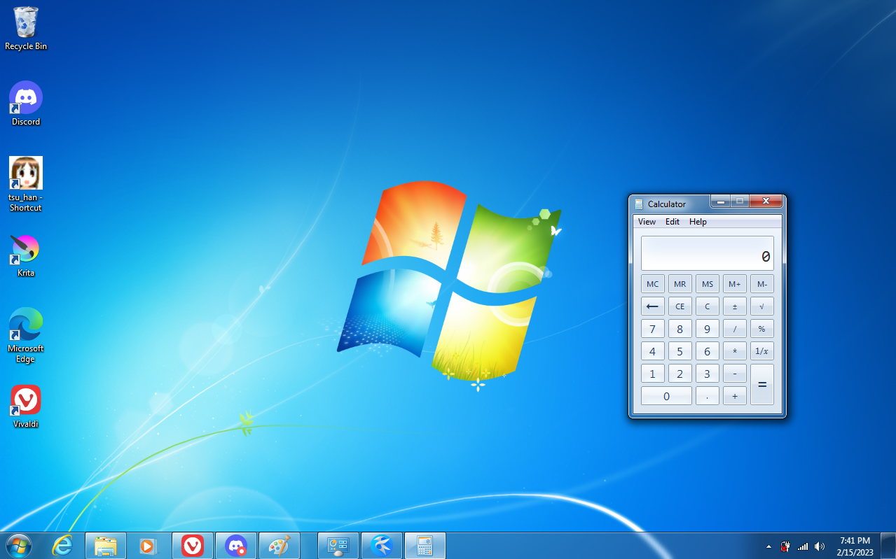
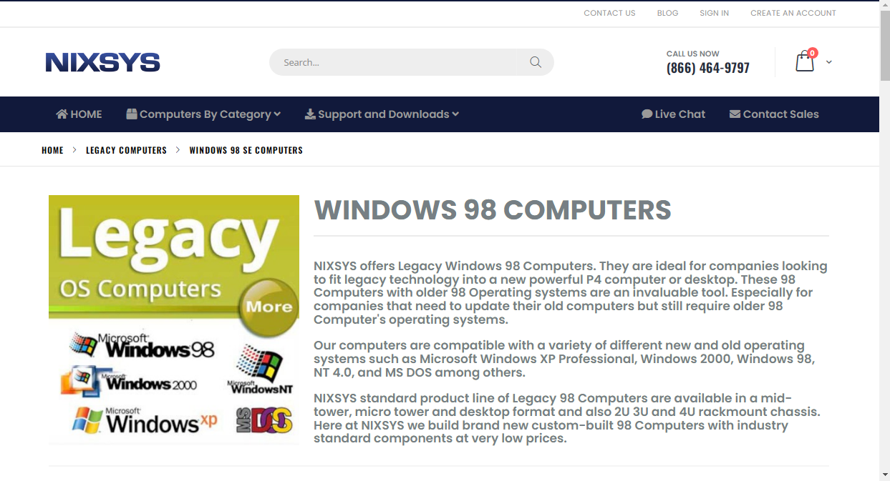
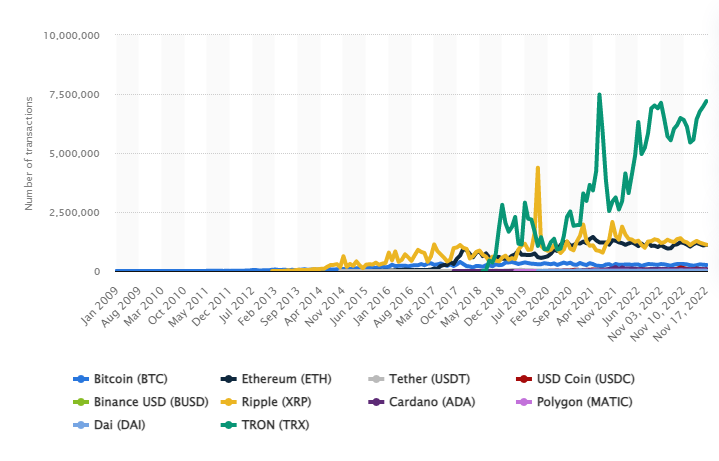
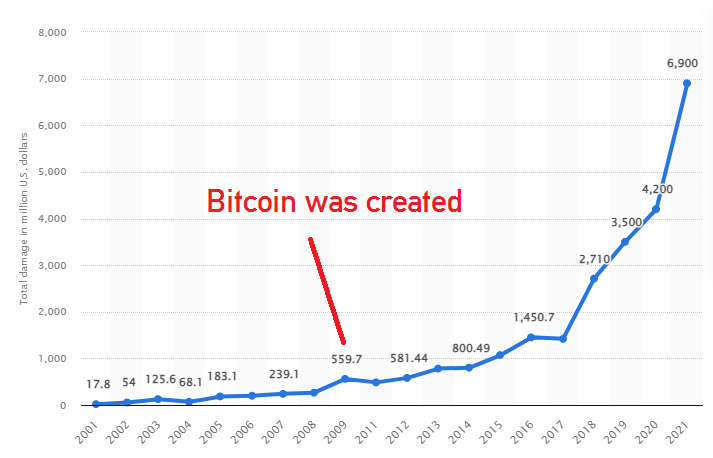

Windows 7, eWaste, and the modern day Malware
Windows 7 is an operating system that runs near and dear to my heart. I do admit that I have a little bit of nostalgia towards Windows 7, from the skeuomorphism of the calculator app, to the lovely blues and cyans that fill the Frutiger Aero aesthetic. I have fond(ish) memories of filling up my family computer with all different types of malware. Exploring all these interesting osbcure websites that I probably only saw through advertisements or through word of mouth.
Windows 7 in my mind was the last era that we truly had "The Wild West" of the internet, and that's not necessarily a bad thing, nor would I say it's a particularly great thing either.
The way that I view how Windows 7 was utilized was in the types of malware or scareware people developed for it. Windows 7 was the first operating system for countless individuals, and was one of the widest used computers on the internet.
Let's look at some Statistics. This chart from Statcounter GlobalStats is a map of Operating System usage in the 2012 year. Luckily for us, we have an rough number of how many computers not only were running Windows 7, but also how many of them were connected online in 2012, and that's only possible due to the Carna botnet. The Carna botnet was a nonmalicious entity that recorded pings on unsecured (or using the default password) routers online. It recorded 1.3 billion active addresses, 729 million reported DNS records. Taking from another statistic that states that 41.4% of the worldwide population of 2012 had atleast one computer, this leads us with 2,922,840,000 internet capable devices, or an estimated 4 computers per household. Taking the Statcounter "Top 6 Desktop OSes from Jan - December 2012" and averaging the usage of Windows 7, we get 56.14%, which leads us to an estimated 1,640,882,376 household devices running Windows 7 in 2012.

What this unfortunately means is that these 1.6 million devices have collected dust, been thrown away, or had parts replaced like a modern Ship of Theseus, with the remaining parts being thrown away or collecting dust. These devices have collectively garnered the name "eWaste". Old hardware, not built to last. Batteries burst, dust clogs airways, and thermal paste/pads decay in their utility. In our constant stride for advancements in technology, we never really found an efficient use for these obsolete hardware, outside of maybe makeshift space heaters or semitruck weighing device. Hell, you can buy a Windows 98 OEM device with a warranty in 2023!

Software has advanced while most of this hardware has stayed static. It truly is interesting to see how modern software interacts with old hardware (to me, atleast). As technology advances, our tolerance for inefficient software gets leniant and leniant; a wasted 64 megabytes of ram isn't as big of a deal nowadays as it was in 1998.
A modern web browser uses up FAR too much ram for any sane individual to not notice how technology has changed, and with that, malware and scareware has changed with it.
The Ghost of Malware Past

I know it's a little bit generic to be talking about fucking Bonzi Buddy. I know all about the memes centering around him, but I'm talking about him for a good reason. Bonzi Buddy is the perfect dummy to use as an example of malware of the Wild West.
Bonzi Buddy is mostly nonmalicious. The most malicious aspects of Bonzi not comes from intentional designs, but by bad software design. Bonzi Buddy gets called numerous different names. Spyware, Adware, Trojan. All of these are true.
Bonzi Buddy works by behaving as an assistant for your computer. Think of it like Siri or Cortana but half as intelligent and twice as annoying. Bonzi Software collected user data to send to their centralized server to sell to advertisers. Stuff like their browsing history was monitored through unwarranted changes to their system, like changing their home page to bonzi.com. If bonzi buddy couldn't connect to the bonzi servers, it will store user data on their system, waiting for a reconnection to the central server.
As you can probably assume, this proved disastrous on people's hard drives, most of which didn't break a gigabyte or two. People will browse the internet for hours upon hours, unaware that their hard drives were potentially overwriting key system files for junk userdata, waiting to be sent to Bonzi Software.
They just simply don't make malware like they used to.
Userdata? For nerds!
A new concept started in 2009, Cryptocurrency. A decentralized, purely speculative, unmoderated avenue for exchanging currency between hands. For malware developers, this was the dream.This created a direct line for people to financially profit from developing malicious software. After the invention of Bitcoin, there was a noticable decrease in the development of Adware and spyware from small groups. Out went Adware, and in came Ransomware.
Ransomware and Bitcoin, Partners in Crime
With the growth of Cryptocurrencies like Bitcoin and Ethereum, there had been a drastic increase in the cost of cybercrimes. In 2009 alone, the year Bitcoin was invented, there was an immediate doubling in the cost of cybercrimes, creating an exponential steepness or a parabola from that moment onwards.
{kind=link}
{kind=link}
As malware moved away from trojan adware to purely profits, you can see less attempts of malicious software attempting to gain user trust. The wild west of the internet is over, there is now no question what is and what isn't malware anymore. Nondestructive malware is almost as rare as nonmalicious software was back then.
The internet is a safer place for the average user. Instead of being the target, average users have become collateral damage. The computers running Windows 7 are tools used, typically by Government Backed groups, to spread to more desirable systems.
Stuxnet, and the future of Malware
Most of what I'm going to be talking about has been detailed in fantastic fashion in Andy Greenberg's book, Sandworm: A New Era of Cyberwar and the hunt for the Kremlin's most dangerous hackers, which comes at a HEAVY recommendation if any of what I talk about peaks your interest at all. Ultimately what I'm gonna write is going to be a footnote compared to the aforementioned book.
A short summary of the events described in the book is that in Bush and Obama administration, the NSA developed a worm named "Stuxnet" that would spread until it located certain terminals used by the Iranian government's uranium enrichment facilities. Stuxnet was used for subtle sabatoge of the uranium enrichment facilities, creating a barrier between what was going on and what was reported, causing heavy delays in advancements.
When Stuxnet was discovered, it largely opened the floodgates of possibilities for countries to commit espionage, sabatoge, and confusion.
If you want examples, Wannacry, NotPetya, and Industroyer (also named Crashoverride (yes that is a reference to the 1995 film Hackers)) where all state sponsored malware created specifically for espionage of opposing countries.